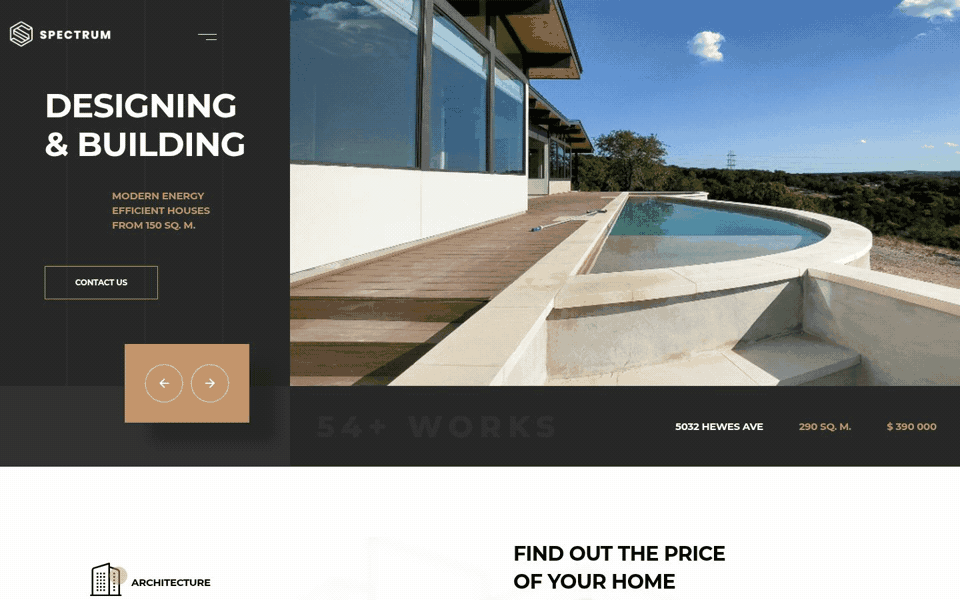
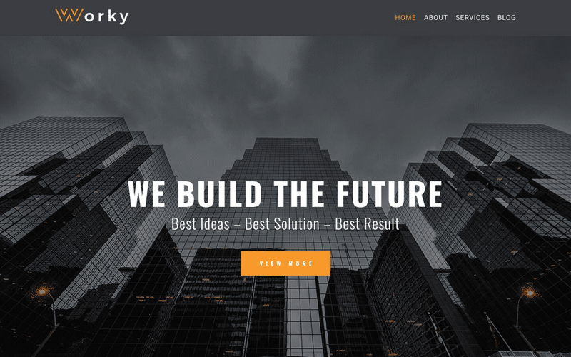
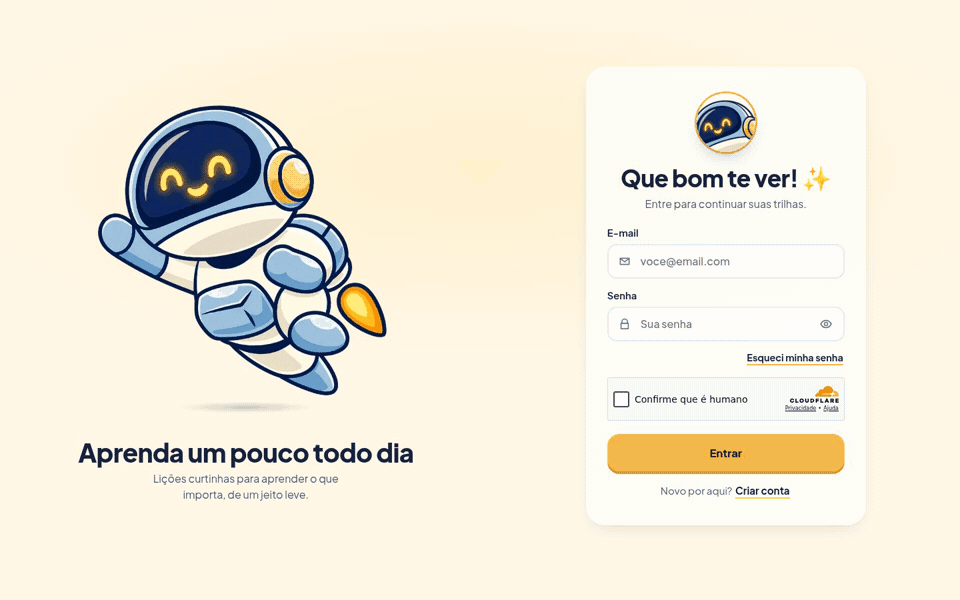
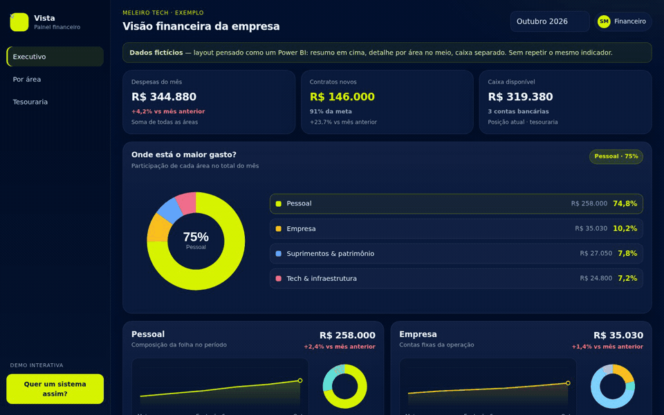

Landing page
Spectrum
Construtora de casas modernas, com obras, orçamento e portfólio.
Ver projetoMeleiro Tech
Mais do que entregar telas: entendemos a operação, desenhamos a solução e evoluímos junto — sites, landing pages e sistemas sob medida.
Role para explorar
Quem somos
Recusamos o genérico. Conversamos com quem usa o sistema, mapeamos a rotina e moldamos a tecnologia ao negócio — nunca o contrário.
Cases
Projetos exemplo em movimento — abra cada um para ver a demo completa.

Construtora de casas modernas, com obras, orçamento e portfólio.
Ver projeto
Site para escritório de arquitetura: serviços, sobre e blog.
Ver projeto
Microaprendizado com lições curtas, contas e trilhas no celular.
Ver projeto
Painel financeiro por setor, lançamentos e tesouraria.
Ver projetoServiços
Modelos de entrega
A gente se encaixa no estágio do seu produto.
Entregas, prazo e investimento alinhados no início. Pagamento por etapa concluída.
Crédito de horas para melhorias, ajustes e manutenção em sistemas já publicados.
Código-fonte e documentação entregues. Sem depender de plataforma fechada.
Próximo passo
Conte o que você precisa. Respondemos com um caminho possível e os próximos passos — sem enrolação.